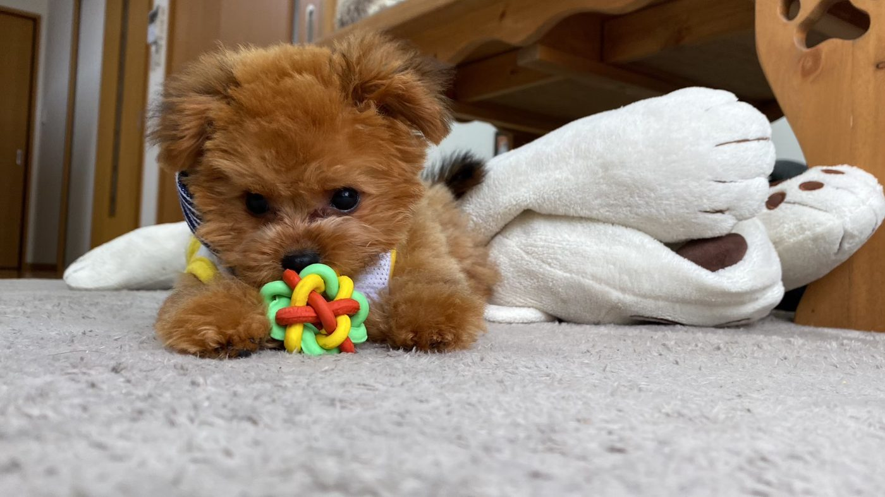
家族になった日
3年前、小さな身体で、甘えるような笑顔で家族に寄り添って来たあの日から、るくは私たちの毎日の中心にいました。 夕方の散歩、帰宅時に駆け寄ってくる足音、休日の何気ない時間。そのひとつひとつが、家族の宝物です。
みんなで一緒に変えていこう！
獣医療過誤から大切家族を守る
「るく署名賛同応援の会」
動物医療の透明性を考える署名サイト
このサイトでは、現在係争中の裁判について原告側の立場を紹介するとともに、
動物医療における命の尊さについて考えるきっかけを提供します。
※ 本件は現在裁判で係争中であり、裁判所による事実認定は行われていません。
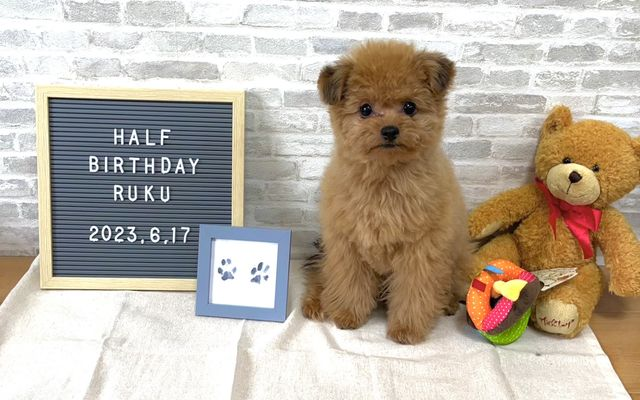
Introduction
ペットなどの動物も、痛みや恐怖や喜びを感じる、感受性のある人間と同じ動物です。 しかし、犬、猫のペット達は自らが助けを求め、表現などで訴えることも出来ない為、 私達家族が感じ取るか、大切な命を預かった動物病院などが感じ取るしかありません。
ペットは家族、日本の未来を皆様のお力で絶対に変えていきましょう！
現在の日本国内では、獣医療の質に起因する獣医療事故（医療過誤）が頻繁に起きているといわれています。 その数は予想を遥かに超える多さで、ペットを家族の一員として、大切な命を信頼して預けたにもかかわらず、 悲しい被害を受けたと感じている方々が後を絶ちません。 医療事故に遭っても、日本の法律ではペットは「物」としての位置付けであり、 被害者側に不利な現状の中で、多くの方が泣き寝入りをしているのが実情です。
今回、私共家族もその当事者の一人となってしまいました。
Goal
２０２５年５月に滋賀県草津市の動物病院で起きた事案について、私たち家族は原告側として、 ２０２５年９月２６日に大阪地方裁判所へ提訴しました。 当事案について動物病院側の過失を問うと共に、ペットが家族として認めてもらえる社会を目指し、 皆様からいただいた貴重な署名を裁判所に提出させていただきます。
※ 過失の有無については現在裁判で係争中であり、上記は原告側の立場に基づく記載です。
Story
愛犬るくは、私たち家族にとってかけがえのない存在でした。
ここでは、2年5ヶ月間楽しく共に過ごした日々の一部をご紹介します。

3年前、小さな身体で、甘えるような笑顔で家族に寄り添って来たあの日から、るくは私たちの毎日の中心にいました。 夕方の散歩、帰宅時に駆け寄ってくる足音、休日の何気ない時間。そのひとつひとつが、家族の宝物です。
嬉しいときも、落ち込んだときも、るくはいつも変わらず寄り添ってくれました。 言葉はなくても、確かに通じ合っていた時間。ペットは「家族の一員」である── 多くの飼い主の方に、共感していただけるのではないかと思います。
Case
署名のご賛同をお願いしたい、当事案の事件詳細です。
以下の経緯は、原告側（当会）の主張および訴状等に基づく内容です。 相手方には相手方の主張があり、裁判所による事実認定はまだ行われていません。
２０２５年５月に滋賀県草津市の動物病院で、単純な医療ミスが原因で起きてしまったと私たちが考えている事件です。 当時、我が家の大切な家族であったポメラニアンとトイプードルのミックス犬『るく』（２歳５ヶ月・メス）が、 滋賀県草津市の動物病院でパテラ手術を受けた6日後に死亡しました。
手術・入院で動物病院を信頼して４日間預けたにもかかわらず、退院後たったの2日で若い命が奪われてしまいました。
手術前は何処の犬にも負けないくらい活発で、健康状態も完全といえるほどの健康体でした。 手術前の血液検査等でも良好な検査結果が出ており、安心して手術ができる状態でした。
完璧な健康状態の中で手術を行ないましたが、手術後（入院中）から衰弱がどんどんと増し始め、 入院期間中に行った血液検査では多数の検査項目で異常値が出ていたにもかかわらず、 医師はそれを楽観視し、精密検査を行うことはなく、衰弱状態が見落とされた結果、重症状態への処置もされないまま、 退院の日まで同じ診断の繰り返しで『手術後はどの犬もこのような同じ状態になるので心配は不用、 元気がないのは単なるホームシックだろうから、自宅に戻ったら次第に元気になる』と誤った診断のもと、 重症状態のまま退院することになりました。それは『るく』にとって、死へのカウントダウンが既に始まっていた時間でした。
入院期間中の４日間に検査・処置がなされなかったため、体内では状態が急変し、 小腸穿孔が起きて小腸は壊死、脾臓にも腹水が溜まり全摘出が必要な状態へと病態が進行し始めていたにもかかわらず、 それに気づかれることのないまま、重症状態へと進行した状態で『ホームシックだから大丈夫』と飼い主に返されました。
退院しても一向に回復はなく、どんどんと衰弱していく姿を見て家族が異変を感じ、 退院後2日目に当該病院ではない地元のかかりつけ医で診察を受けたところ、 「小腸の壊死部摘出と脾臓全摘出を至急実施しないと命が無い」との診断を受け、 地元の救急病院にて同日の夜間に緊急手術に踏み切りました。
手術は無事成功し、術後は急激に体調が良くなり、４本足で立てるようになるまで回復して、 尻尾を振るなど退院後初めて元気な姿を見ることができました。 しかし家族の喜びも長くは続かず、翌日体調が急変し、戻らぬ子となってしまいました。
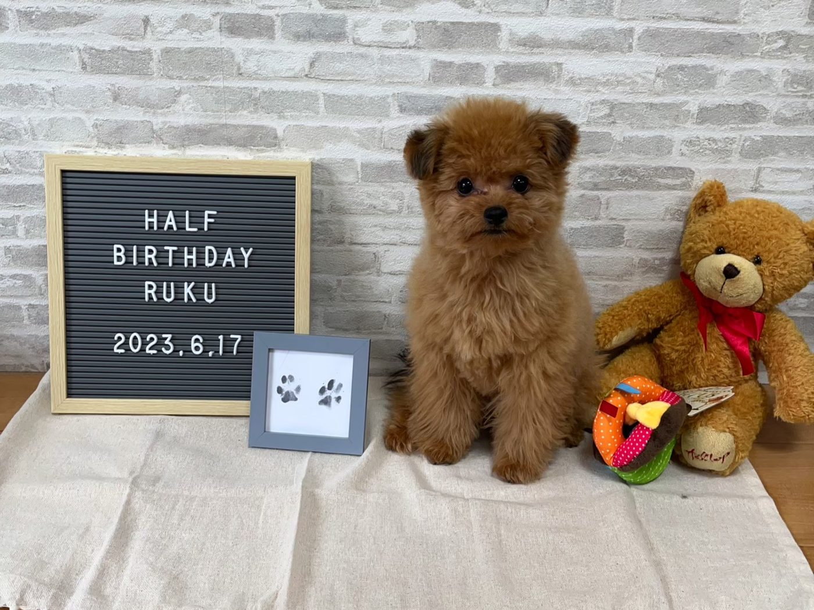
るくとの別れを経て、私たちは「同じ思いをする家族を少しでも減らしたい」と考えるようになりました。 この悲しみを味わった者として、もう二度と起こしてはならない。 将来の動物医療がより良くなるための事例を作っていきたい。 それが、このサイトを立ち上げた理由です。
About
るくの医療をめぐり、私たち家族は現在、裁判という手続きの中で事実関係の明確化を求めています。 原告側として、診療における説明や術後の対応について、司法の場で丁寧に確認していきたいと考えています。
私たちは、司法手続きを尊重し、裁判所の判断を静かに待つ立場です。 本サイトは、この経験を通じて動物医療のあり方を社会全体で考える きっかけをつくるために立ち上げました。
本サイトは判決確定前の事案を扱っています。内容は一方当事者の立場からの情報であることをご理解のうえご覧ください。
Purpose
ペット（家族）の命の重みを全ての獣医師に再認識してもらい、これからの動物医療を良くするために。
この署名活動が、世の中の役に立てる一歩になればと思っております。
治療の選択肢、リスク、見通しについて、飼い主が納得できるまで説明が尽くされること。
飼い主が情報を正しく理解したうえで、治療方針に同意できるプロセスが徹底されること。
手術後の経過観察や容体変化への対応など、術後のケア体制がより手厚くなること。
不安や疑問に向き合い、飼い主と獣医療者が信頼関係を築ける対話の文化が根づくこと。
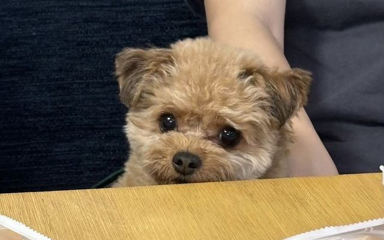
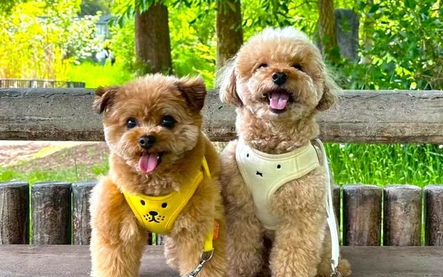
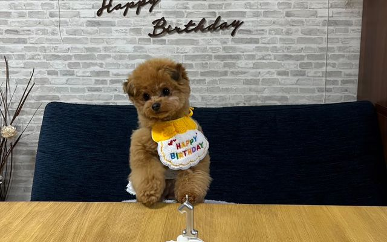
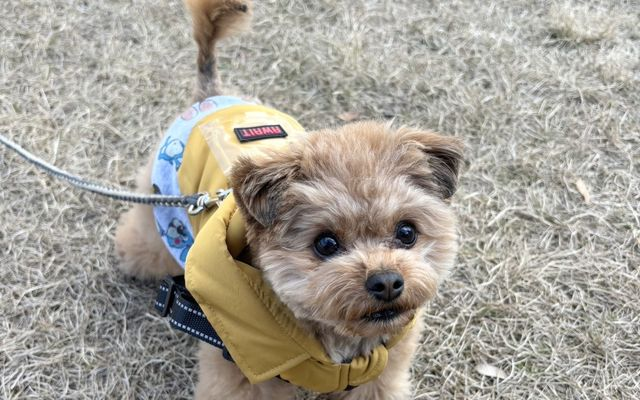
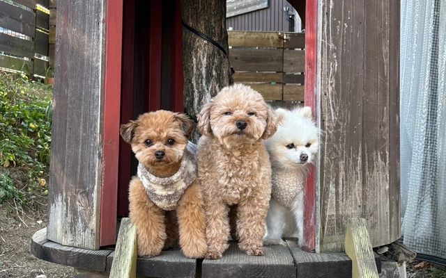
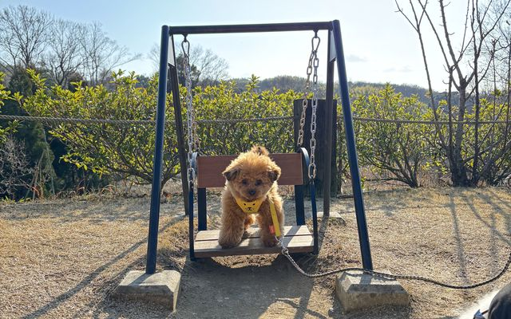
Signature
みんなで、一緒に変えていきましょう。
署名は、誰かを裁くためのものではなく、動物医療における命の尊さについて社会全体で考える意思表示です。
How to Sign
はじめての方でも迷わないよう、署名の手順をご説明します。
本サイトの「署名に参加する」ボタン、または Instagram（rarabee.ruku.love1217） トップ画面のプロフィール文章の下にあるリンク（URL）をクリックしますと、 オンライン署名サイトへ移行して署名ご賛同の入力ページが表示されます。
画面の案内に従い、お名前・Eメールアドレス・居住地だけの入力。
＊居住地入力は市町村のみOK（住所の詳細入力は一切不要）【例】大阪市迄でOKです
＊この辺りまで進みますと金額の様なものが表示される場合がありますが、関係のないオプションの案内なので一切無視して下さい。
署名賛同は無料で一切費用が掛かりませんのでご安心下さい。
下記③のここからが重要まで進まないと、この時点では署名は完了しませんのでご注意願います。
これで最後です。上記の入力が完了されると、②で入力したEメールアドレス宛に オンライン署名サイトから本人確認用メールが届きます。
確認メールの届いた文面の中段付近まで進んで頂き、黄色帯の箇所をクリック
【こちらのボタンをクリックしてオンライン署名への賛同を承認してください】
こちらをクリックすると署名の賛同が全て完了します。
これで終了です！
＊ 署名のご賛同には一切費用はかかりませんのでご安心ください
Timeline
裁判手続きの経過を、確認できた範囲でお知らせします。
原告側として、大阪地方裁判所に訴訟を提起しました（2025年9月26日）。
大阪地方裁判所にて、第一回口頭弁論が開かれました。
本サイトを開設し、署名活動を開始しました。
※ 掲載している経過は原告側が把握している手続きの流れであり、裁判所の判断・事実認定を示すものではありません。
Media
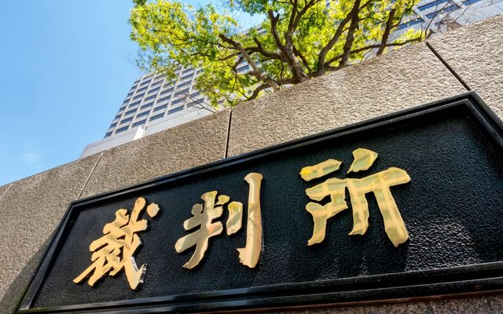
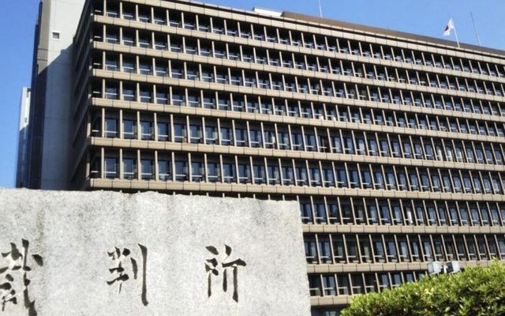
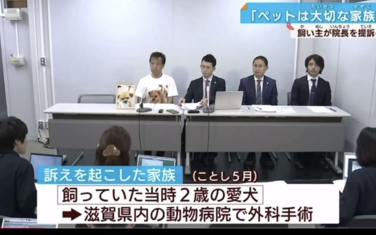
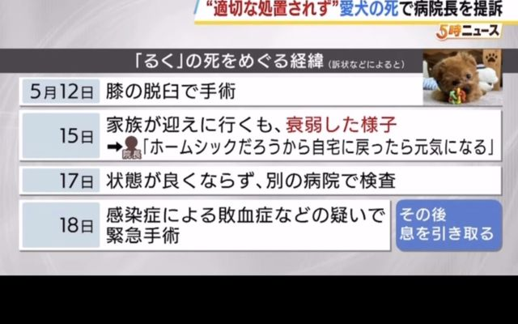
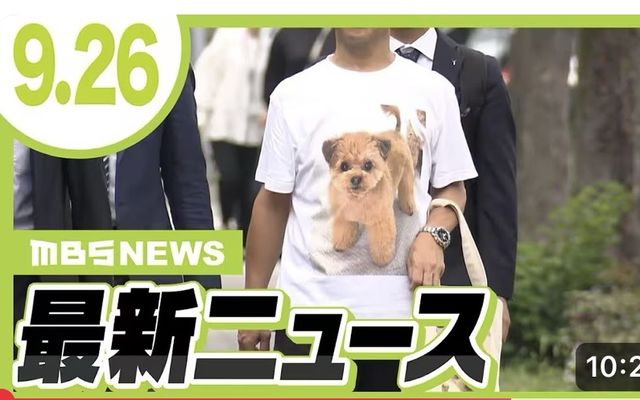
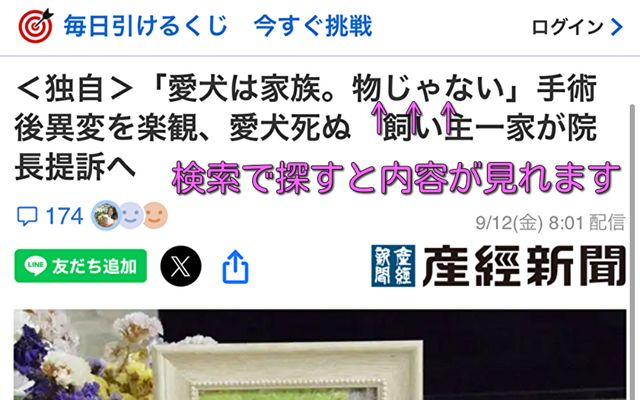
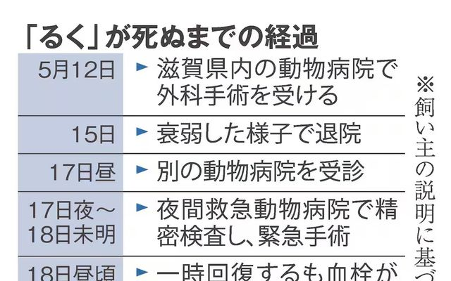
※ 一部の画像は産経新聞・MBS NEWS・TBS NEWS DIG等の報道より。報道内容は各社の取材に基づくものであり、裁判所の判断を示すものではありません。
本サイトの掲載内容は、係争中の裁判に関する原告側の主張・立場を紹介するものであり、 裁判所による事実認定を示すものではありません。裁判の結果により、事実認定が変わる可能性があります。
本サイトは、特定の個人・法人・施設に対する誹謗中傷、名誉毀損、業務妨害等を目的とするものではありません。